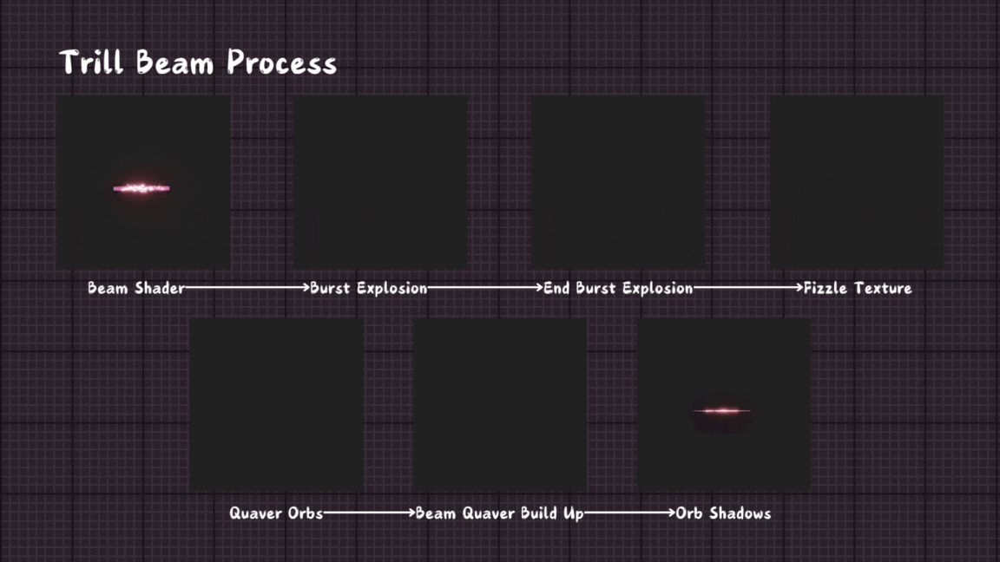
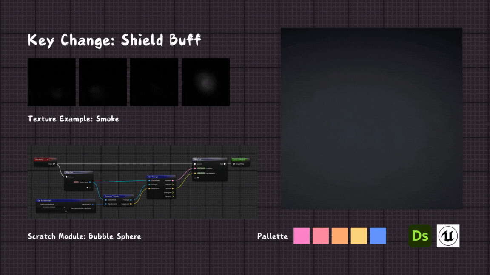
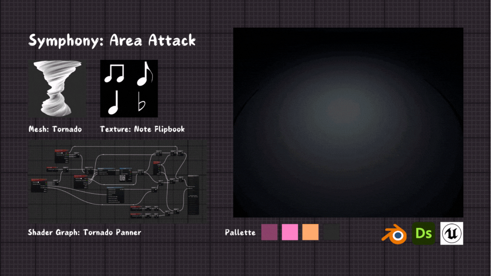

VFX Music Pokemon Moveset


Overview
This was a VFX take on a Pokemon moveset inspired by fairy type moves and musical elements. All the moves featured musical names to best describe the type of movement. For example Crescendo Crush is an ultimate move that powers up and crushes a beam down on the opponent. The movset included multiple assets made within Substance designer that mimicked musical notation.
My Contributions
There were multiple sections to this project including a full moveset, integrated UI and an opposing force to link the attack to. I am by no means a VFX artist however it was a fun way to expand my knowledge of the Niagara System as well as Substance Design and Blender. A lot of these were created using a base tutorial but then changing different params to find out how it worked and how to adjust it to my design idea.

